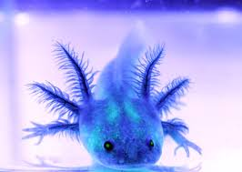
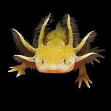

Цікава легенда

«За давньою легендою бог Шолотль перетворився на аксолотля, щоб урятуватися від небезпеки. Відтоді ця маленька істота стала символом життя та відродження».
 Головна сторінка
Головна сторінка
Аксолотль — це дивовижна земноводна тварина, яка все життя залишається у личинковій стадії. Його часто називають «усміхненою саламандрою» через характерний вираз мордочки.
Назва «аксолотль» походить від імені ацтекського бога Шолотля. За легендою він перетворився на цю істоту, щоб уникнути жертвопринесення.
Назва «аксолотль» походить від імені ацтекського бога Шолотля. За легендою він перетворився на цю істоту, щоб уникнути жертвопринесення.
Аксолотль має унікальну здатність відновлювати втрачені кінцівки, хвіст, частини серця, мозку та інших органів. Саме тому він є дуже цінним для наукових досліджень.
У домашніх акваріумах аксолотлів утримують у прохолодній чистій воді. Вони не люблять високу температуру та яскраве освітлення.
Харчуються аксолотлі черв'яками, мотилем, дрібною рибою, креветками та спеціальним кормом для хижих амфібій.
Дорослий аксолотль може досягати довжини 25–30 сантиметрів. У природі вони мають темне забарвлення, а в неволі можна зустріти білі, рожеві, золотисті та чорні різновиди.
Через свою незвичайну зовнішність аксолотлі стали дуже популярними в усьому світі. Їх можна побачити у фільмах, мультфільмах, відеоіграх та навіть у вигляді м'яких іграшок.
Незважаючи на популярність, аксолотлі перебувають під загрозою зникнення, тому їх охороняють природоохоронні організації.
Кожен може допомогти зберегти цих дивовижних тварин, підтримуючи програми із захисту природи та дбайливо ставлячись до навколишнього середовища.
Аксолотль є символом витривалості, відродження та здатності пристосовуватися до складних умов життя.

«За давньою легендою бог Шолотль перетворився на аксолотля, щоб урятуватися від небезпеки. Відтоді ця маленька істота стала символом життя та відродження».
Сьогодні аксолотль є символом мексиканської природи та одним із найцікавіших представників земноводних, яких вивчають учені всього світу.
Аксолотль є однією з найунікальніших земноводних тварин у світі. Він може відновлювати втрачені кінцівки, частини серця, мозку та навіть внутрішніх органів. Завдяки цій здатності аксолотлів активно вивчають учені.

Заповніть невелику анкету та поділіться своєю думкою про аксолотлів.